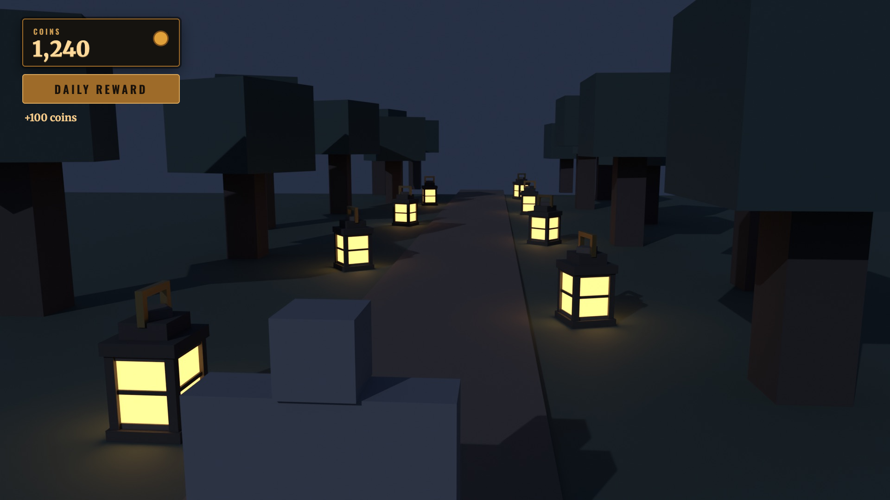
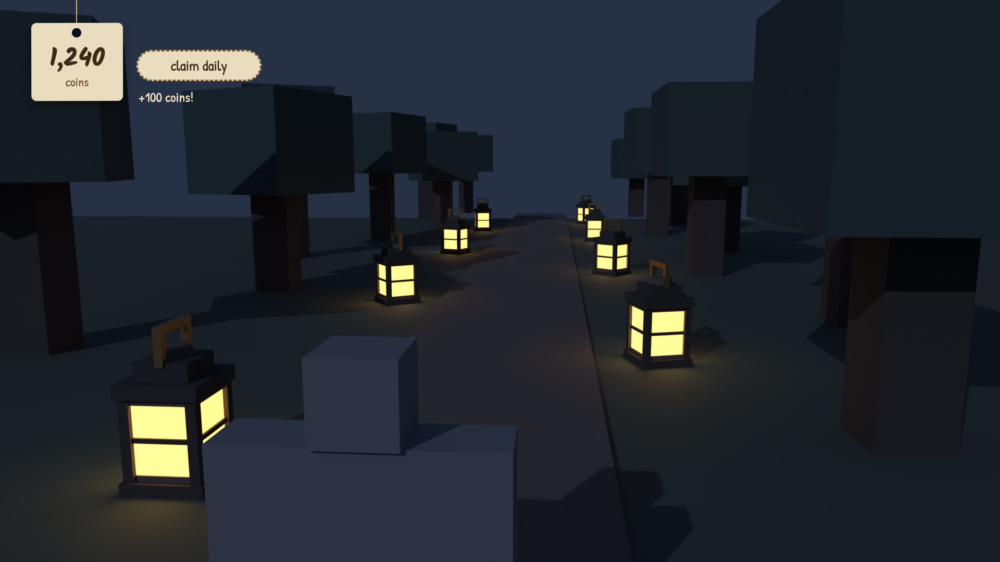
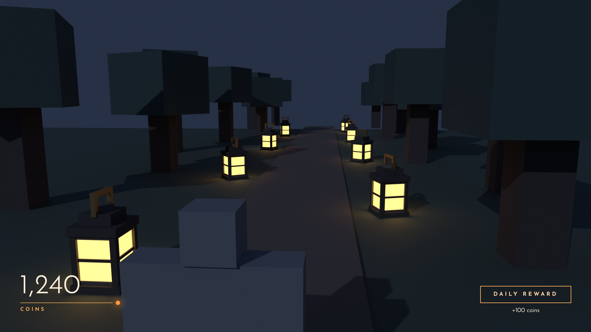

Lanternlight Examples
Two small pieces of an example night game, each taken through the starter kit's pipeline stage by stage: a 3D lantern built in Blender, and a HUD designed as three directions, picked, then rebuilt from measured numbers. Every image here was produced by the tools in the repo. The mistakes the audits caught are left in, because they're the useful part.
3D asset: the Lantern
Workflow: vault/Workflows/3D Asset.md. Built from box data by examples/3d-lantern/build_lantern.py, one run per stage, rendered headless in Blender 5.2. 21 boxes, 252 triangles, 3.95 studs tall.
Brief
A standing floor lantern for a blocky, cosy night game. Size in studs, a triangle budget (it's placed dozens of times), how close the camera gets, and the one or two details that sell it: glowing amber panes with a cross bar, and a brass handle.
The art style decides the route. Blocky means Claude builds it in Blender from box data, with no AI generation. A realistic character would go through an AI 3D tool instead.
Blockout
Audit caughtThe first blockout had a floating handle: its side pieces only arrived in the detail pass. "Nothing floats" is on the checklist, so it was fixed before showing. The lineup next to an R15-sized figure showed it's chest-high, which made it a floor lantern, not a hand-held one.


Detail
Corner posts, a cross bar on every pane, stepped trims on the base and cap, a turned roof tip, a wick and flame inside. Still grey, so the shapes get judged before colour can flatter them.


Materials
Audit caughtThe first render's panes came out washed-out cream. Blender's default AgX view transform desaturates bright emissive colour, which Roblox doesn't do. Switched to the Standard view transform, warmed the glass, re-rendered. Colours get judged as the game will show them.


In game
Next step05 In Game/rebuild_from_parts.luau rebuilds the lantern from Parts in a test place, straight from boxes.json, so the palette can be tuned under the game's real lighting before the mesh is exported with tools/3d/blender_export_roblox.py and uploaded. This example stops before that step because no test place was open.
UI screen: the HUD
Workflow: vault/Workflows/UI Screen.md, taste rules in vault/Roblox/UI Craft.md. The mocks are real 1920×1080 pages in examples/ui-hud/02 Preview/; screenshots and numbers come from tools/ui/measure.mjs. The backdrop is a Blender render of the lantern scene, standing in for an in-game screenshot.
Spec
Coins always visible, a daily reward button, a status line. It shows real data only and works in every state.
| State | What shows |
|---|---|
| Loading | 0 coins; the button still works (the server answers safely) |
| Ready | Button idle; it grows on hover and shrinks on press |
| Claimed | Coins update, status "+100 coins" |
| Cooldown | Status "back in 6h 12m" |
Three directions
Three genuinely different directions, each drawn over the game frame and each using only fonts Roblox ships. The frame matters: C failsits big coin number sits on top of a bright lantern and nearly disappears, which a flat background would have hidden.



Why A: it takes its iron, brass and amber straight from the lantern model, so the HUD and the world read as one game. It stays legible over any part of the scene. B is charming, but handwritten numerals are slow to read at a glance. C is clean but too quiet for a busy night scene.
Build from numbers
node tools/ui/measure.mjs "02 Preview/A Brass Plaque.html" reads every tagged element and prints its Roblox numbers:
Plaque Position = UDim2.fromOffset(48, 40) Size = UDim2.fromOffset(340, 104)
fill Color3.fromRGB(21, 19, 15) corner 6px stroke 2px rgb(158, 107, 41)
Coins Position = UDim2.fromOffset(70, 78) Size = UDim2.fromOffset(300, 56)
"1,240" Merriweather 900 46px Color3.fromRGB(255, 217, 154)
Daily Position = UDim2.fromOffset(48, 160) Size = UDim2.fromOffset(340, 64)
fill Color3.fromRGB(158, 107, 41) corner 6px stroke 2px rgb(214, 164, 90)Audit caughtThe first measurement gave 344×108 instead of 340×104, because CSS borders add to the size unless the mock uses box-sizing: border-box. A few pixels like that are why a "close" build looks wrong. Fixed in the mocks, and the Fusion build insets each frame by its UIStroke width, since Roblox draws the stroke outside the edge.
Result: examples/ui-hud/03 Build/HudController.luau, a drop-in for the framework's HUD, with every offset taken from the measurement.
Compare in game
Next stepSwap the build into a game, take an in-game screenshot at 1920×1080, and lay it next to shots/A.png. Tune stroke weight, letter spacing and the button glow until they read the same, then click every control in a playtest. The build has not been playtested yet, which is why the template still ships its original, tested HUD.